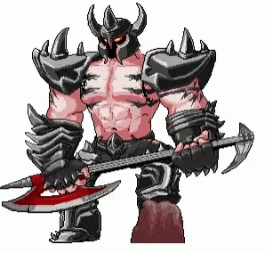
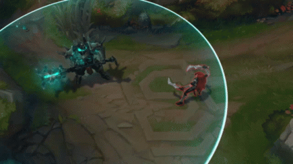

Hola! como viste, el saludo se encontraba subrayado por una etiqueta que vuelve a iniciar justo ahora ademas estoy encerrado en un cuadrito!(Estoy encerrado en un cuadrito por la cualidad block)
Y ahora todo el texto se encuentra subrayado, la etiqueta mark funciona dentro de los paragrafos y desde donde se estipula su inicio hasta su fin, tendra un color amarillo, al igual que un resaltador comun, a no ser...
Bueno, el texto que acabas de leer se encontraba con la cualidad inline-block, la cual es una mezcla de la que observas ahora mismo y la que observaste en primer lugar, cuando te salude
Como mencione este div se encuentra en inline, cualidad que hace que todos los elementos se vean alineados, un ejemplo seria
Es en este momento que ponemos un lindo mordekaiser en medio del texto que estas viendo en pantalla, ¿No es precioso? Toca la pinche guitarra. Se cree moises y separa el texto y lo retoma al finalizar la imagen.
Aqui implementamos una imagen debajo de este parrafo para observar su comportamiento, sin embargo, no hay mucho que explicar, ya que inserta el siguiente paragrafo bajo la imagen
El texto se encuentra justo y donde lo deje, bajo la imagen.

Ahora podemos ver como la hoja de estilos logro que pudieramos centrar al hermoso y suculento mordekaiser, al igual que este texto, jiji(Se que no es de 100x100 pero es que se ve muy feo tan chiquito profe)